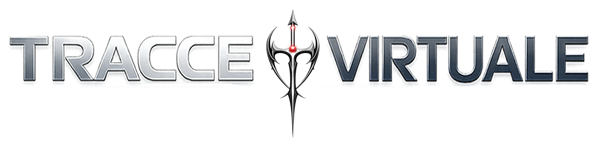
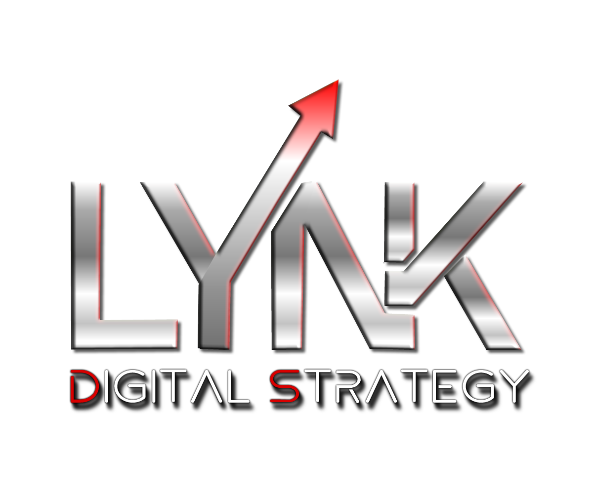
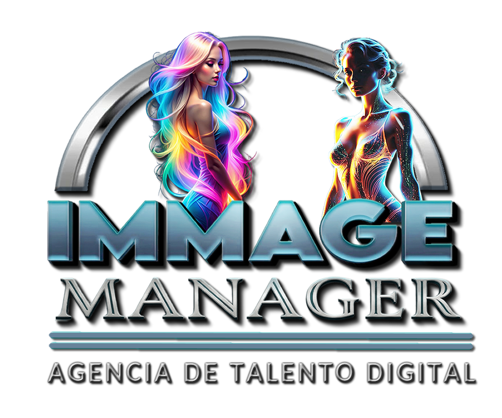
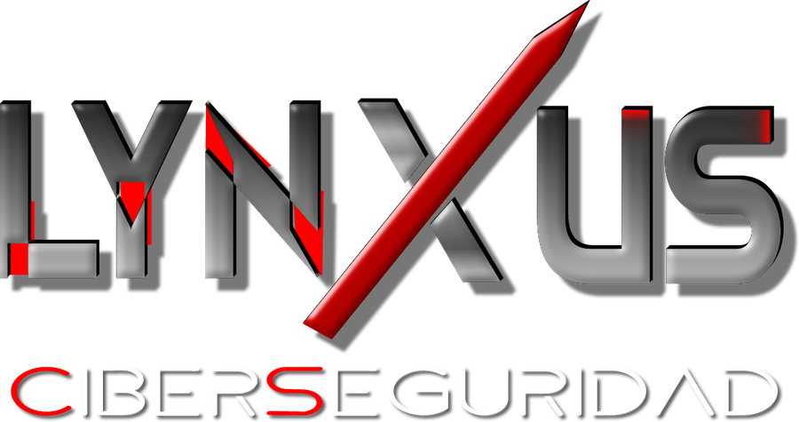
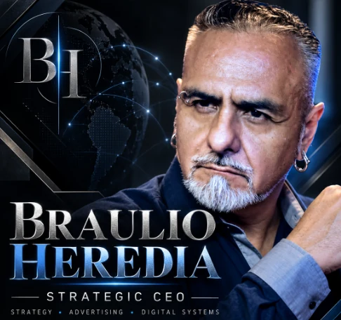

Diseñamos ecosistemas inteligentes que transforman tu operación.
TRACCE VIRTUALE diseña, integra y evoluciona Ecosistemas Inteligentes para organizaciones que buscan transformar su operación mediante tecnología, automatización, inteligencia artificial y estrategias digitales. Convertimos negocios tradicionales en organizaciones más eficientes, rentables y preparadas para el futuro.
ECOSISTEMAS INTELIGENTESINTELIGENCIA ARTIFICIALAUTOMATIZACIÓNDESARROLLO DE SOFTWAREMARKETING ESTRATÉGICOANÁLISIS DE DATOSCIBERSEGURIDADLYNK · LYNXUS · IMMAGEECOSISTEMAS INTELIGENTESINTELIGENCIA ARTIFICIALAUTOMATIZACIÓNDESARROLLO DE SOFTWAREMARKETING ESTRATÉGICOANÁLISIS DE DATOSCIBERSEGURIDADLYNK · LYNXUS · IMMAGE
¿Te reconoces en alguna de estas?
Estas son las situaciones que más escuchamos de negocios, profesionistas y familias. Si te viste en una, ya sabemos por dónde empezar.
¿Haces a mano tareas que te quitan horas cada semana?
Automatización¿Se te escapan clientes porque nadie responde a tiempo?
IA que atiende por ti¿Tu información está dispersa y no sabes cómo va tu negocio realmente?
Datos y paneles¿Te preocupa que roben tu identidad, tu dinero o los datos de tu familia?
LYNXUS · Seguridad¿Sientes que la tecnología te quita tiempo en lugar de dártelo?
Ecosistema Tracce VirtualeSi te identificaste con alguna, platiquemos. Empezamos entendiendo tu caso, no vendiéndote herramientas.
- Te responde una persona
- Sin compromiso
- Primero análisis, después ejecución
Qué hacemos
Diseñamos ecosistemas digitales capaces de atraer clientes, automatizar procesos, optimizar recursos, analizar información y facilitar la toma de decisiones.
Inteligencia artificial
IA aplicada a la operación diaria: entiende, predice y ayuda a decidir mejor.
Automatización
Procesos que se ejecutan solos, con menos errores y mejor uso de tiempo y recursos.
Desarrollo de software
Plataformas, paneles y sistemas web a la medida, integrados con el resto del ecosistema.
Marketing estratégico
Estrategia, marca, imagen y contenido para atraer clientes de forma constante.
Análisis de datos
La información de tu organización convertida en decisiones claras y medibles.
Ciberseguridad
Protección integrada desde el diseño: sistemas, datos, personas y reputación (LYNXUS).
Cada proyecto se construye como un sistema conectado, no como un conjunto de servicios independientes.
Un ecosistema, cuatro marcas
LYNK abre la puerta, TRACCE VIRTUALE ofrece la alta gama, IMMAGE MANAGERS cuida a las personas detrás de la imagen y LYNXUS concentra la ciberseguridad y el trabajo con factores humanos.

TRACCE VIRTUALE
Diseño, integración y evolución de ecosistemas inteligentes para organizaciones: estrategia, arquitectura tecnológica e inteligencia aplicada.

LYNK
Directorio virtual y mapa de negocios. Es la entrada accesible al ecosistema para empresas de todos los tamaños.

IMMAGE MANAGERS
División de talento e imagen: representación, protección de identidad y presencia pública de personas.

LYNXUS
Ciberseguridad y factores humanos: auditorías de exposición, concientización y protección de personas y negocios.
Tecnología que libera tu tiempo
La misma idea que compartimos en redes es la que aplicamos en tu negocio: tecnología útil, seguridad real y más tiempo para lo que importa.
Un legado que precede a la tendencia
Antes de que “lo digital” fuera obligatorio, ya publicábamos destinos en internet.
Antes de los smartphones y las redes sociales, ya sabíamos cómo hacer que internet hablara de tu negocio.
En la época en que no había smartphones ni redes sociales, nosotros ya saturábamos servidores con las visitas a nuestros sitios.
En ese tiempo también intentaron copiar nuestro modelo de negocio. Lo intentarán de nuevo, y es porque solo se le copia a quien sabe lo que hace.
Sabemos hacer publicidad. Conocemos las estrategias para comunicarte directamente con quien será tu cliente.
- Acapulco
- Ixtapa
- Querétaro
- Guadalajara
- Uruapan
- Tlaxcala
- Lázaro Cárdenas
- Morelia
- y más…
2005
Nacen los portales
Portal-LZC y los portales de Acapulco e Ixtapa ponen a la región en internet.
2005–2010
Una audiencia real
Guías, directorios y turismo digital cuando pocos negocios tenían sitio web.
Hoy
Tracce Virtuale
Esa experiencia se une con IA y seguridad para una nueva etapa.
LYNK: tu negocio en el mapa
Un directorio virtual con mapa donde los clientes encuentran negocios por categoría y ubicación. Es el primer paso natural: visibilidad inmediata, con la opción de crecer hacia los servicios de TRACCE VIRTUALE.
Seguridad que empieza por las personas
La mayoría de los incidentes comienzan con un descuido, un engaño o información expuesta. LYNXUS combina defensa técnica con formación y auditorías de exposición para cerrar esa brecha.
- Auditoría de huella digital y exposición
- Concientización y hábitos seguros
- Reducción de superficie de ataque
- Monitoreo de reputación
Talento e imagen, bien protegidos
IMMAGE MANAGERS acompaña a personas con presencia pública: gestiona su imagen, cuida su identidad real y controla lo que se sabe de ellas en línea.
Cómo trabajamos
Seis pasos, claros desde el primer día.
1
Investigamos
Conocemos todo tu negocio.
2
Analizamos
Hacemos un análisis profundo de la presencia e imagen publicitaria que ofreces. Detectamos fallas y cuellos de botella. Generamos un reporte claro sobre lo que encontramos.
3
Propuesta estratégica
Generamos una propuesta estratégica y un plan accionable para mejorar tu imagen publicitaria, optimizar y mejorar procesos e implementar las herramientas necesarias para generar mejores resultados.
4
Construcción
Construimos el ecosistema ideal para tu negocio, aprobado por ti.
5
Protección
Aseguramos accesos, datos y reputación.
6
Crecimiento
Medimos, ajustamos y escalamos.
IA que acelera, personas que deciden
Usamos inteligencia artificial para investigar, producir y automatizar. Cada resultado pasa por criterio humano antes de llegar a ti.
DATOS
▼INTELIGENCIA ARTIFICIAL
▼DIRECCIÓN HUMANA
▼RESULTADO CONFIABLE

Detrás de Tracce Virtuale hay una persona, no un call center.
Soy Braulio Heredia, Strategic CEO de Tracce Virtuale. Desde 2005 construyo y opero proyectos digitales entre Guerrero y Michoacán: portales con audiencia real, producción, representación de talento y hoy ecosistemas inteligentes. Hablas conmigo, lo diseñamos juntos y cada resultado pasa por criterio humano.
- Portales digitales con tráfico real desde 2005
- Producción, medios y representación artística
- Base en Ixtapa–Zihuatanejo, con red en Lázaro Cárdenas
Preguntas frecuentes
Lo que suelen preguntarnos antes de empezar.
¿Cómo es la primera conversación?
Nos escribes por WhatsApp, nos cuentas qué te quita tiempo o clientes y te escuchamos. Es una conversación sin compromiso: si no podemos ayudarte, te lo decimos.
¿Tengo que cambiar lo que ya uso?
No necesariamente. Primero investigamos y analizamos cómo trabajas hoy, y conectamos o mejoramos lo que ya funciona antes de proponer algo nuevo.
¿Cuánto cuesta?
Depende del alcance. Después del análisis recibes un reporte claro y una propuesta estratégica con un plan accionable: qué se hará, en qué orden y cuánto cuesta, para que decidas con claridad.
¿La inteligencia artificial va a sustituir a mi equipo?
No. La IA acelera tareas repetitivas y ordena información; las decisiones siguen siendo de personas. Tu equipo gana tiempo para lo que realmente importa.
Mi negocio es pequeño, ¿también es para mí?
Sí. LYNK es la entrada accesible al ecosistema: visibilidad inmediata en el mapa y directorio, con la opción de crecer después hacia servicios más completos.
¿Y si me preocupa mi seguridad digital?
Con LYNXUS revisamos tu huella digital y tu exposición, y te enseñamos hábitos seguros para ti, tu negocio y tu familia.
Hablemos de tu proyecto
Cuéntanos qué necesitas. Tu mensaje llega por WhatsApp y te responde una persona. Sin compromiso.